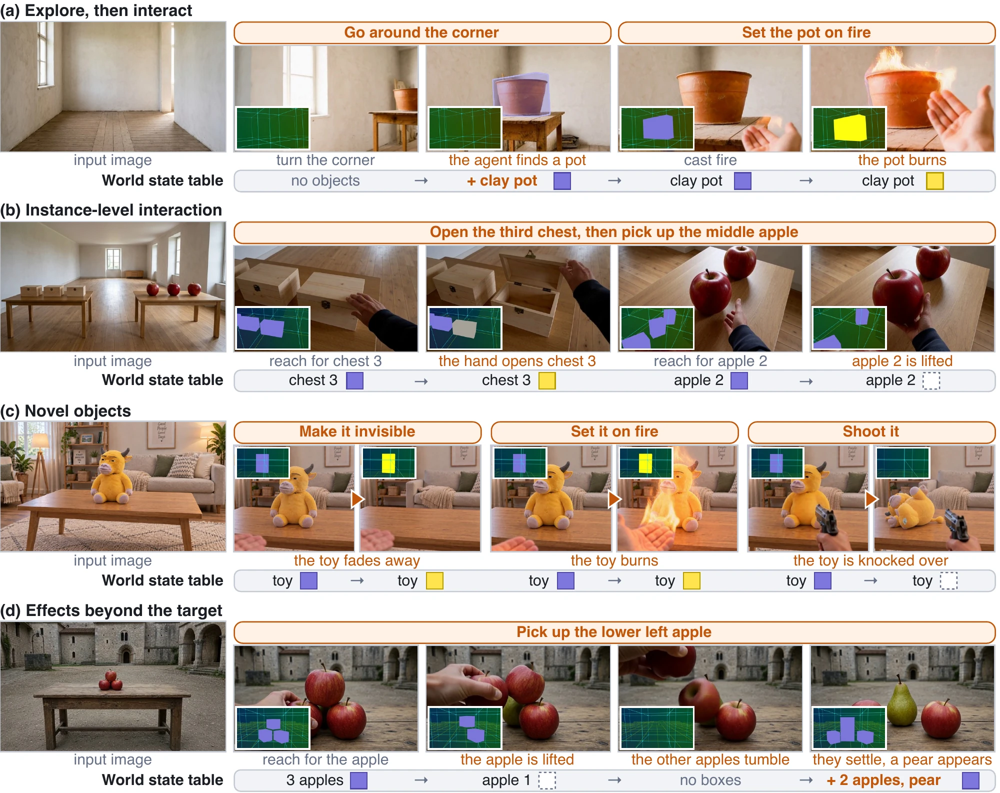
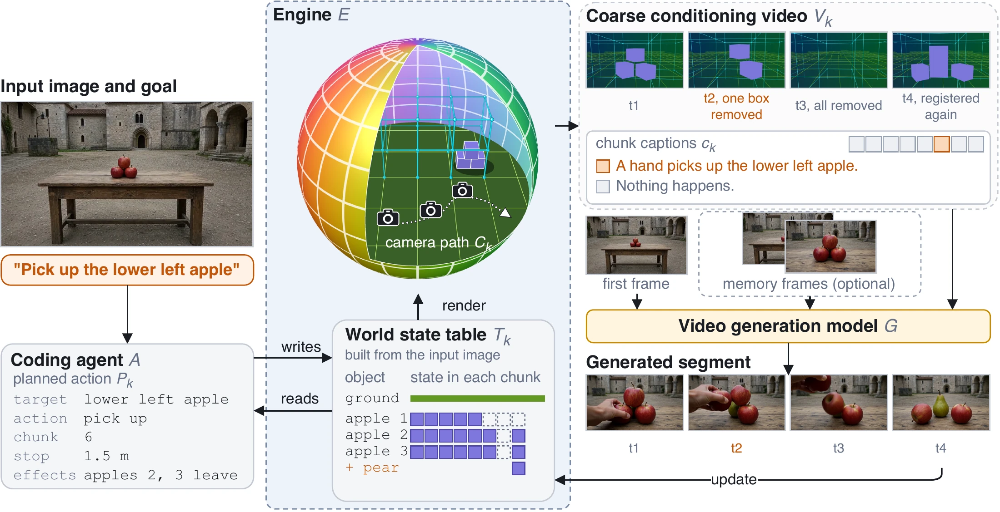

Persistent state
A hand puts out the campfire with frost and later gilds the apple. Both objects keep their new states when the camera turns back.
Compare with baselines →Corresponding author
What appears in the generated world becomes actionable, and what the agent changes remains changed.
A hand puts out the campfire with frost and later gilds the apple. Both objects keep their new states when the camera turns back.
Compare with baselines →The carved stone sphere is absent from the first frame. The coding agent registers it once it comes into view on the terrace, and a hand gilds it in the next segment.
Open the full case →Among three identical plants and three identical toolboxes, only the middle plant turns gold and only the right toolbox freezes.
Compare with baselines →A hand takes the fire extinguisher off its mount and then sprays the burning bin until only thin smoke remains.
Open the full case →The inset in each video is the coarse conditioning video that the engine renders from the world state table.
Generative video world models can now synthesize increasingly open-ended environments that agents can navigate and interact with in simple ways. Yet open-ended generation does not imply full interaction: as a generated world expands, newly created content through navigation should also expand what the agent can act upon, and as the agent changes the world, those changes should become persistent parts of the environment rather than transient visual effects. We characterize these two requirements as Open-World Interactivity, where newly generated or encountered entities are dynamically incorporated into the actionable world, and Persistent State, where interaction outcomes are committed to the world state and continue to influence subsequent observations and interactions. We present Oneira, an interactive video world model that closes the loop between generation and interaction through an explicit, extensible world state continuously managed by a coding agent. Given the current observation and an action or high-level goal, the agent reads the world state, grounds the relevant entities, plans the interaction, and writes its outcome back into a world state table. When exploration reveals new objects, the agent dynamically incorporates them from generated observations, allowing the interaction space to expand with the generated world. Meanwhile, previously induced state changes are carried across video segments, making the consequences of interaction persistent parts of subsequent world evolution. The updated world state is rendered along the camera action trajectory into a coarse conditioning video, from which a video generator fills in the appearance, motion, and interaction details not explicitly represented in the state. Experiments show that Oneira enables direct and logically consistent interaction with newly generated objects during open-world exploration, while preserving the effects of prior interactions consistently over long horizons.
Open-ended generation does not imply full interaction. A fully interactive generative world requires two properties.
As exploration reveals or generates new entities, the interaction space should expand with the world, so that newly created content can become explicit targets of subsequent actions.
When an agent changes the world, the outcome of that interaction should become a durable part of the world state and continue to constrain future observations and interactions.
Oneira meets both requirements with an explicit world state table that a coding agent updates. As shown in Fig. 1, it supports navigation and interaction beyond the input image (a), instance-level control (b), generalization to novel objects (c), and effects beyond the target object (d).

Oneira separates world evolution from visual realization. The explicit world state determines what exists and what changes, while the video model determines how those changes look and move.

Given the input image and a goal, the coding agent $A$ reads the previous world state table $\mathcal{T}_{k-1}$ and plans each action $\mathcal{P}_k$. For the goal in Fig. 2, $\mathcal{P}_k$ picks up the lower left apple in chunk 6 and records that apples 2 and 3 leave as a side effect.
The world state table $\mathcal{T}_k$ keeps only the interaction-relevant state of the scene. It records the walkable ground, and each object entry holds a semantic label, a 3D box, a presence flag, and a state per chunk. When the pear in Fig. 2 appears in the generated frames, the coding agent registers it in the table.
The engine $E$ writes each planned action into the table and renders the updated table $\mathcal{T}_k$ along the camera path $C_k$ as the coarse conditioning video $V_k$. An interaction appears in $V_k$ as the removal or recoloring of an object box. In Fig. 2, the lower left apple loses its box at t2, and the two tumbling apples lose theirs at t3.
The video model $G$ generates the segment from the first frame, optional memory frames, $V_k$, and the chunk captions $c_k$. It fills in the appearance, motion, and interaction details that the world state leaves unspecified. The last frame and the updated table $\mathcal{T}_k$ start the next segment.
Here $a_k$ is the action input of segment $k$ and $\hat{I}^{(k)}_0$ is its first frame. This loop follows a standard world model with a transition $s_k = f(s_{k-1}, a_k)$ and an observation model $o_k \sim p(o \mid s_k)$. The world state table $\mathcal{T}_k$ acts as the explicit state $s_k$, the coding agent $A$ and the engine $E$ jointly instantiate $f$, and the video model $G$ serves as $p$.
Our baselines are the MiniMax-H3 Ref2VA backbone and three interactive video world models, LingBot-World-V2, YUME 1.5, and AlayaWorld. The first two parts below compare Oneira with them on the same first frame and the same chunk captions, and the last two parts show Oneira on its own.
Each case shows the first frame, the conditioning video of Oneira, and the chunk captions next to the generated videos. Orange marks the chunks whose captions carry an interaction. All videos of a case play in sync while the case is on screen, and the caption panel highlights the current chunk during playback. Click a video to play or pause, and double-click it to view it large.
We evaluate interaction control, memory of changed states, and visual quality on InteractionBench. Bold marks the best entry in each column based on unrounded scores.
| Method | Interaction ↑ | Timing ↑ | Target ↑ |
|---|---|---|---|
| MiniMax-H3 Ref2VA | 0.30 | 0.57 | 0.53 |
| LingBot-World-V2 | 0.49 | 0.40 | 0.39 |
| YUME 1.5 | 0.05 | 0.43 | 0.22 |
| AlayaWorld | 0.08 | 0.16 | 0.26 |
| Oneira (ours) | 0.78 | 0.76 | 0.82 |
Pass rates on the 100 interaction cases, checking the action, its chunk, and the changed instance.
| Method | PSNR ↑ | SSIM ↑ | State ↑ |
|---|---|---|---|
| MiniMax-H3 Ref2VA | 10.96 | 0.34 | 0.68 |
| LingBot-World-V2 | 9.08 | 0.27 | 0.44 |
| YUME 1.5 | 10.09 | 0.35 | 0.41 |
| AlayaWorld | 9.19 | 0.30 | 0.39 |
| Oneira (ours) | 21.11 | 0.64 | 0.80 |
PSNR and SSIM compare the visit and revisit frames at the same pose on the 50 memory chains, and State checks that the target keeps its changed state.
| Method | Subject consistency | Background consistency | Motion smoothness | Temporal flickering | Dynamic degree | Aesthetic quality | Imaging quality | Overall consistency |
|---|---|---|---|---|---|---|---|---|
| MiniMax-H3 Ref2VA | 0.83 | 0.90 | 0.99 | 0.97 | 1.00 | 0.53 | 0.73 | 0.19 |
| LingBot-World-V2 | 0.79 | 0.87 | 0.97 | 0.98 | 0.97 | 0.54 | 0.72 | 0.20 |
| YUME 1.5 | 0.83 | 0.89 | 0.99 | 0.97 | 0.95 | 0.52 | 0.74 | 0.20 |
| AlayaWorld | 0.79 | 0.88 | 0.99 | 0.95 | 0.65 | 0.49 | 0.69 | 0.18 |
| Oneira (ours) | 0.84 | 0.90 | 0.99 | 0.97 | 1.00 | 0.54 | 0.73 | 0.22 |
Eight VBench dimensions on all 150 cases.